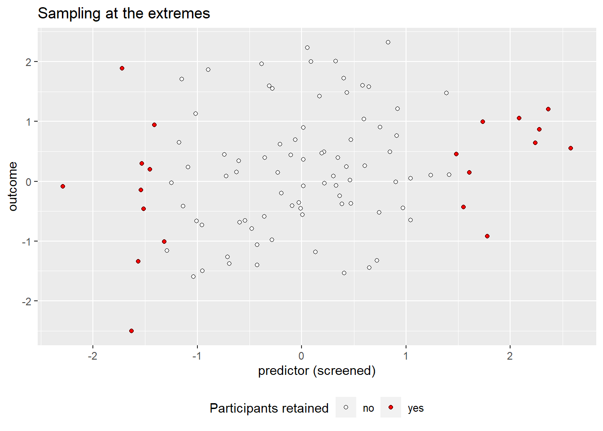
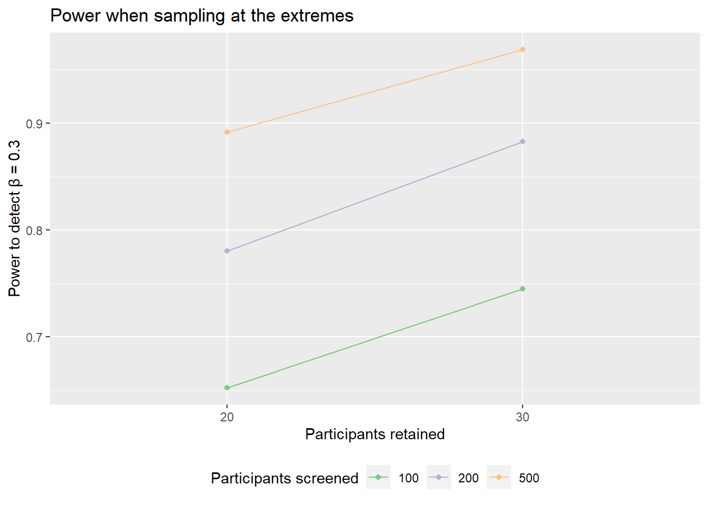
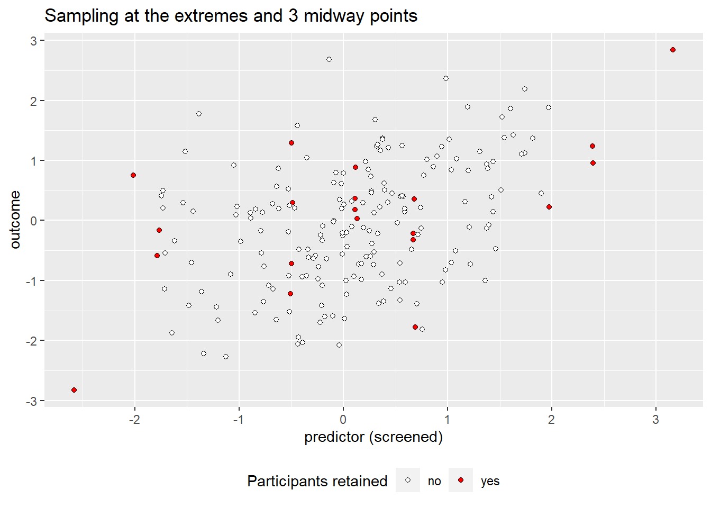
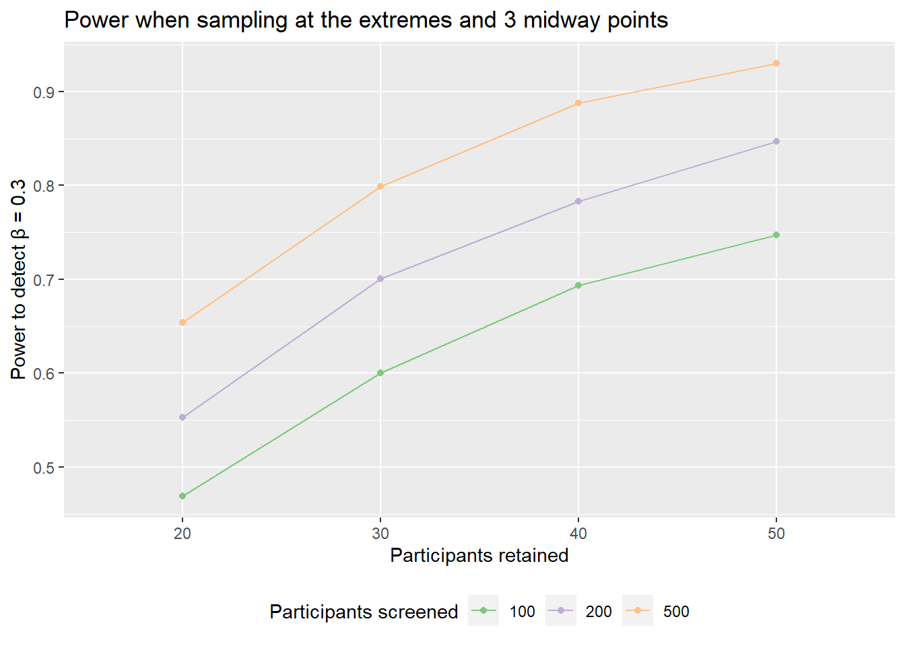

pwr::pwr.r.test(n = NULL, r = 0.3, power = 0.9)
approximate correlation power calculation (arctangh transformation)
n = 111.8068
r = 0.3
sig.level = 0.05
power = 0.9
alternative = two.sidedJan Vanhove
July 14, 2017
Numerical summaries of research findings will typically feature an indication of the sizes of the effects that were studied. These indications are often standardised effect sizes, which means that they are expressed relative to the variance in the data rather than with respect to the units in which the variables were measured. Popular standardised effect sizes include Cohen’s d, which expresses the mean difference between two groups as a proportion of the pooled standard deviation, and Pearson’s r, which expresses the difference in one variable as a proportion of its standard deviation that is associated with a change of one standard deviation of another variable. There exists a rich literature that discusses which standardised effect sizes ought to be used depending on the study’s design, how this or that standardised effect size should be adjusted for this and that bias, and how confidence intervals should be constructed around standardised effect sizes (blog post Confidence intervals for standardised mean differences). But most of this literature should be little importance to the practising scientist for the simple reason that standardised effect sizes themselves ought to be of little importance.
In what follows, I will defend this point of view, which I’ve outlined in two previous blog posts (Why I don’t like standardised effect sizes and More on why I don’t like standardised effect sizes), by sharing some quotes by respected statisticians and methodologists. In particular, I hope to, first, make you think about the deterimental effect that the use of standardised effect sizes entails on the interpretability of research findings and the accumulation of knowledge and, second, convince you that the use of standardised effect sizes for planning studies overly stresses sample size as the main determinant of a study’s power and that by abandoning it other roads to power can be opened up.
When justifying their use of standardised effect sizes, researchers usually cite the need to be able to compare results that were obtained on different scales or to render results on scales that are difficult to understand more meaningful. I understand this argument up to a point, but I think it’s overused. Firstly, to the extent that different outcome measures for similar constructs are commonly used, it should be possible to rescale them without relying on the variance of the sample at hand. This could be done by making reference to norming studies. Moreover, standardised effect sizes should not be an excuse to ignore one’s measurements:
“To work constructively with ‘raw’ regression coefficients and confidence intervals, psychologists have to start respecting the units they work with, or develop measurement units they can respect enough so that researchers in a given field or subfield can agree to use them.” (Cohen, 1994)
Secondly, when different instruments are used to measure different constructs, then I think it’s actually an advantage when the measurements cannot directly be compared. Thirdly, I agree with Tukey (1969) in that I think that the increase in interpretability from standardised effect sizes is largely deceptive:
“Why then are correlation coefficients so attractive? Only bad reasons seem to come to mind. Worst of all, probably, is the absence of any need to think about units for either variable. (…) [W]e think we know what r = -.7 means. Do we? How often? Sweeping things under the rug is the enemy of of good data analysis. (…) Being so disinterested in our variables that we do not care about their units can hardly be desirable.” (Tukey, 1969)
Indeed, correlation coefficients in particular are regularly misinterpreted as somehow representing the slope of the function characterising the relationship between two variables (see Vanhove, 2013). I think that the apparent enhanced interpretability of standardised effect sizes stems from most researchers’ “knowing” that r = 0.10 represents a ‘small’ effect size, r = 0.30 a ‘medium’ one, and r = 0.50 a ‘large’ one according to Cohen (1992), which enables them to map any correlation coefficient somewhere on this grid. (Plonsky & Oswald, 2014, propose different reference values for L2 research, but the idea is the same.) But apart from positioning their own standardised effect size relative to the distribution of standardised effect sizes in a biased literature, most of which isn’t related to their own study, I don’t see what this buys us in terms of interpretability.
One situation where I grant that standardised effect sizes are more useful and fairly easy to interpret is when you want to express how much information one variable contains about another. For instance, when you want to see how collinear two or more predictor variables are so that you know whether they can sensibly be used in the same regression model, or when you want to argue that two cognitive traits may or may not be isomorphic. But more often, we’re interested in characterising the functional relationship between variables, often in terms of a causal narrative. For such a purpose, standardised effect sizes are wholly unsuited:
“The major problem with correlations applied to research data is that they can not provide useful information on causal strength because they change with the degree of variability of the variables they relate. Causality operates on single instances, not on populations whose members vary. The effect of A on B for me can hardly depend on whether I’m in a group that varies greatly in A or another that does not vary at all.” (Cohen, 1994)
Cohen also writes that
“(…) I’ve found that when dealing with variables expressed in units whose magnitude we understand, the effect size in linear relationships is better comprehended with regression than with correlation coefficients.” (Cohen, 1990)
I obviously agree, and I’d like to point out that I think that “variables expressed in units whose magnitude we understand” doesn’t merely include lengths in metres and response latencies in milliseconds, but also responses on 5- or 7-point scales.
Standardised effect sizes are often used in the pinnacle of cumulative science, namely meta-analyses. That said, as I’ve written in a previous blog post, standardised effect sizes can make it seem as though two studies on the same phenomenon contradict each other when they in fact found the exact same result, and vice versa. As Tukey writes,
“I find the use of a correlation coefficient a dangerous symptom. It is an enemy of generalization, a focuser on the”here and now” to the exclusion of the “there and then.” Any influence that exerts selection on one variable and not on the other will shift the correlation coefficient. What usually remains constant under such circumstances is one of the regression coefficients. If we wish to seek for constancies, then, regression coefficients are much more likely to serve us than correlation coefficients.” (Tukey, 1969)
I know too little of meta-analyses to have any firm views on them. But if standardised effect sizes are indispensible to the meta-analyst, they’re easy to compute on the basis of the raw effect sizes and other summaries provided, so there’s little need to other researchers to focus on them.
I know come to the main point I want to make. One major use of standardised effect sizes is in discussing the statistical power of studies. Indeed, it was Cohen’s (1977) treatise on power analyses that popularised standard effect sizes in the behavioural sciences. The reason Cohen (1977) used standardised effect sizes when discussing statistical power was a practical one (see p. 11): statistical power is a function of one’s sample size and the ratio of the population-wide effect to the within-population variability. Instead of providing one table with power values for a population-wide effect of 3 units and for a within-population standard deviation of 10 units and another table for an effect of 12 units and a standard deviation of 40 units (and so on), he could just provide a table for an effect-to-standard deviation ratio of 0.3.
Current discussions about statistical power are almost invariably castin terms of standardised effect sizes. The problem is that in such discussions the standardised effect size of a phenomenon in a particular social context is typically treated as immutable. That is, you can’t change the standardised effect size of the phenomenon you’re investigating at the population level. However, standardised effect sizes in fact conflate the (raw, possibly causal) effect size of what you’re investigating—which indeed you can’t change as a researcher—with the variability of the data, which you can change through optimising the research design:
“[T]he control of various sources of variation through the use of improved research designs serves to increase [standardised] effect sizes as they are defined here.” (…) “Thus, operative effect sizes may be increased not only by improvement in measurement and experimental technique, but also by improved experimental designs.” (Cohen, 1977)
As a result of the assumption of immutable standardised effect sizes, discussions about statistical power overly focus on the other determinant of power, i.e., sample size. Large sample sizes are obviously a good thing, but there are other roads to high-powered studies (or to studies with high precision) that don’t get as much attention. In the next section, I’ll discuss three other roads to power.
For a given raw effect size and a given sample size, studies are more powerful when there is less residual variance in the outcome variable. Much of this residual variance will be related to differences at the construct level (e.g., people differ with respect to how introvert they are or to how well they can detect grammatical rules in a miniature language). But some part of it will be due to measurement error, i.e., variance unrelated to the construct you’re interested in. If we could reduce the measurement error in the outcome variable, we’d reduce the residual variance and we’d consequently improve the study’s statistical power.
Now, it’s easy for me to say that everyone, myself included, ought to use instruments with less measurement error. Apart from taking time and money to develop and validate, highly reliable instruments can take forbiddingly long to administrate. But there are sometimes easier ways to reduce one’s measurement error. For instance, labelling some or all of the points on a rating scale enhances its reliability (Krosnick & Presser, 2010). As another example, when the outcome variable consists of human ratings of text quality, it may be difficult to get raters to agree on a score but it may be fairly easy to recruit additional raters. By averaging the judgements of multiple raters, the ratings’ measurement error can be much reduced.
For further discussion about measurement error and statistical power, see Sam Schwarzkopf’s blog post (Update (2023-08-07): This external link appears to be broken.).
The residual variance can also be reduced by statistically accounting for known sources of variability in the data. This is usually done by means of covariates. Covariates seem to have a bad reputation nowadays since they can easily be abused to turn non-significant results into significant findings. But used properly, they can work wonders power- and precision-wise. I won’t discuss covariate control in more detail here and refer to these blog posts instead:
The last underappreciated road to power that I’ll discuss is purposeful selective sampling: instead of sampling collecting data on whichever participants you can convince to sign up for your study, you screen the pool of potential participants and target only a subset of them. Selective sampling is particularly attractive when the outcome variable is difficult or expensive to collect (e.g., because it’s based on a task battery that takes hours to complete), but when the predictor variable of interest (or a proxy of it) can easily be collected in advance (e.g., the participants’ age or their performance on a school test they took the year before). If you’re willing to assume that a linear relationship exists between the predictor and the outcome, you can achieve excellent power for a fraction of the resources that would be needed to attain the same power using random sampling. And if you’re not willing to assume a linear relationship, selective sampling can still be highly efficient.
To illustrate this, let’s say you want to investigate the relationship between an easy-to-collect predictor and a difficult-to-collect outcome. Unbeknownst to you, the population-level variance–covariance matrix for this relationship is
\[ \Sigma = \begin{pmatrix} 1 & 0.3 \\ 0.3 & 1\end{pmatrix}. \]
That is, both variables have a standard deviation of one unit at the population level and a 1-unit increase along the predictor is associated with a 0.3-unit increase in the outcome. In other words, the population-wide regression coefficient for this relationship is 0.3. Since the variables have standard deviations of one unit, the correlation coefficient at the population level is 1 as well, which simplifies the comparisons below.
If we wanted to have a 90% chance to detect a significant correlation between these two predictors, we would have to sample 112 participants:
approximate correlation power calculation (arctangh transformation)
n = 111.8068
r = 0.3
sig.level = 0.05
power = 0.9
alternative = two.sidedBut this is assuming we sampled participants randomly from the population. Instead, we could sample participants from the extremes. The figure below illustrates a scenario where you collect the predictor data for 100 participants but only go on to collect the outcome data for the 10 participants with the highest score and for the 10 participants with the lowest score, for a total sample size of 20.
Update (2023-08-07): I added the R code for these simulations.
library(tidyverse)
Sigma <- rbind(
c(1, 0.3)
, c(0.3, 1)
)
d <- MASS::mvrnorm(n = 100, mu = c(0, 0), Sigma = Sigma)
ranks <- rank(d[, 1])
selected <- ifelse((ranks <= 10) | (ranks >= 91), "yes", "no")
d_tbl <- tibble(
predictor = d[, 1]
, outcome = d[, 2]
, selected = selected
)
ggplot(d_tbl,
aes(x = predictor,
y = outcome,
fill = selected)) +
geom_point(shape = 21) +
scale_fill_manual(values = c("white", "red"),
name = "Participants retained") +
xlab("predictor (screened)") +
ylab("outcome") +
labs(title = "Sampling at the extremes") +
theme(legend.position = "bottom")
In this scenario, sampling at the extremes leads to a study with 65% power. For reference, randomly sampling 20 participants from the population only gives 26% power. Obviously, power can further be increased by sampling more participants at the extremes. But more crucially, casting a wider net during screening, e.g., by screening 200 participants rather than 100, leads to an ever bigger increase in power. As the figure below shows, screening 200 participants and retaining 30 or screening 500 and retaining only 20 yields 89-90% power—a considerable improvement over random sampling in terms of efficiency! Sampling at the extremes results in larger correlation coefficients, but crucially, it doesn’t affect regression coefficients and so still allows us to correctly characterise the relationship between the two variables (see my earlier blog post as well as Baguley, 2009).
# For estimating power when using extreme sampling
power_extreme_sampling <- function(n_screened, n_retained,
beta = 0.3,
sims = 10000) {
Sigma <- rbind(c(1, 0.3),
c(0.3, 1))
one_run <- function(n_screened, n_retained, Sigma) {
d <- MASS::mvrnorm(n = n_screened, mu = c(0, 0), Sigma = Sigma)
ranks <- rank(d[, 1])
d <- d[ranks <= ceiling(n_retained/2) | ranks > n_screened - floor(n_retained/2), ]
summary(lm(d[, 2] ~ d[, 1]))$coefficients[2, 4]
}
results <- replicate(sims, one_run(n_screened, n_retained, Sigma))
mean(results < 0.05)
}
# Compute power for different parameter combinations
params <- expand.grid(n_screened = c(100, 200, 500),
n_retained = c(20, 30))
params$power <- mapply(
power_extreme_sampling
, n_screened = params$n_screened
, n_retained = params$n_retained
)
# Graph
ggplot(params,
aes(x = factor(n_retained),
y = power,
colour = factor(n_screened),
group = factor(n_screened))) +
geom_line() +
geom_point() +
xlab("Participants retained") +
ylab("Power to detect β = 0.3") +
labs(title = "Power when sampling at the extremes") +
scale_colour_brewer(name = "Participants screened",
type = "qual") +
theme(legend.position = "bottom")
One major drawback to sampling at the extremes is that you have to be willing to assume a linear relationship between the two variables. If you’re not willing to assume such a relationship, you can instead sample both at the extremes and at a couple of midway points. This way, you can check whether the relationship is indeed linear. The figure below illustrates the scenario where you screen 200 participants and then go on to collect the outcome data for the four participants with the highest predictor score, the four with the lowest predictor score, and four participants each closest to the 25th, 50th and 75th screening sample percentile, for a total of 20 participants in the final sample.
n_screened <- 200
n_retained <- 20
n_sampling_points <- 5
d <- MASS::mvrnorm(n = n_screened, mu = c(0, 0), Sigma = Sigma)
ranks <- rank(d[, 1])
target_ranks <- seq(from = 1, to = n_screened, length.out = n_sampling_points)
n_per_point <- floor(n_retained / n_sampling_points)
# Helper function for identifying the data points closest to the midway points
find_closest_indices <- function(x, target_value, n) {
sorted_indices <- order(abs(x - target_value))
closest_indices <- sorted_indices[1:n]
return(closest_indices)
}
# Obtain indices of data points closest to midway points
indices <- vector()
for (point in target_ranks) {
indices <- c(indices,
find_closest_indices(ranks, point, n_per_point))
}
selected <- rep(FALSE, n_screened)
selected[indices] <- TRUE
d_tbl <- tibble(
predictor = d[, 1]
, outcome = d[, 2]
, selected = ifelse(selected, "yes", "no")
)
ggplot(d_tbl,
aes(x = predictor,
y = outcome,
fill = selected)) +
geom_point(shape = 21) +
scale_fill_manual(values = c("white", "red"),
name = "Participants retained") +
xlab("predictor (screened)") +
ylab("outcome") +
labs(title = "Sampling at the extremes and 3 midway points") +
theme(legend.position = "bottom")
In this scenario, sampling at both the extremes and 3 midway points leads to 57% power, which is still a respectable boost relative to the paltry 26% random sampling gives you. The figure below shows that with a wide enough net, excellent power can be achieved with as few as 40–50 participants while enabling you to assess whether the relationship between the two variables is approximately linear. Picking only 2 midway points gives increases power somewhat, and different strategies for determining the midway points may be more efficient still. But the main point is that abandoning standardised effect sizes as the basis for power computations enables you to explore ways to improve the statistical power or precision of your studies other than doubling your sample size.
# For estimating power when sampling at midway points
power_midway_sampling <- function(n_screened, n_retained,
beta = 0.3, n_sampling_points = 5,
sims = 10000) {
Sigma <- rbind(c(1, 0.3),
c(0.3, 1))
# Helper function for identifying the data points closest to the midway points
find_closest_indices <- function(x, target_value, n) {
sorted_indices <- order(abs(x - target_value))
closest_indices <- sorted_indices[1:n]
return(closest_indices)
}
one_run <- function(n_screened, n_retained, Sigma, n_sampling_points) {
d <- MASS::mvrnorm(n = n_screened, mu = c(0, 0), Sigma = Sigma)
ranks <- rank(d[, 1])
target_ranks <- seq(from = 1, to = n_screened, length.out = n_sampling_points)
n_per_point <- floor(n_retained / n_sampling_points)
indices <- vector()
for (point in target_ranks) {
indices <- c(indices, find_closest_indices(ranks, point, n_per_point))
}
selected <- rep(FALSE, n_screened)
selected[indices] <- TRUE
d <- d[selected, ]
summary(lm(d[, 2] ~ d[, 1]))$coefficients[2, 4]
}
results <- replicate(sims, one_run(n_screened, n_retained,
Sigma, n_sampling_points))
mean(results < 0.05)
}
# Compute power for different parameter combinations
params <- expand.grid(n_screened = c(100, 200, 500),
n_retained = c(20, 30, 40, 50))
params$power <- mapply(
power_midway_sampling
, n_screened = params$n_screened
, n_retained = params$n_retained
, sims = 10000
)
# Graph
ggplot(params,
aes(x = factor(n_retained),
y = power,
colour = factor(n_screened),
group = factor(n_screened))) +
geom_line() +
geom_point() +
xlab("Participants retained") +
ylab("Power to detect β = 0.3") +
labs(title = "Power when sampling at the extremes and 3 midway points") +
scale_colour_brewer(name = "Participants screened",
type = "qual") +
theme(legend.position = "bottom")
Standardised effect sizes conflate raw, possibly causal effect sizes with data variability, and aren’t as readily interpretable as often believed. Discussions about statistical power based on standard effect sizes correctly stress the importance of sample size, but often gloss over other, complementary ways to design high-powered studies. Untangling raw effect size from data variability when discussing power can lead to practical recommendations to increase statistical power more efficiency.
Baguley, Thom. 2009. Standardized or simple effect size: What should be reported. British Journal of Psychology 100. 603-617.
Cohen, Jacob. 1977. Statistical power analysis for the behavioral sciences (rev. edn.). New York: Academic Press.
Cohen, Jacob. 1990. Things I have learned (so far). American Psychologist 45(12). 1304-1312.
Cohen, Jacob. 1992. A power primer. Psychological Bulletin 112(1). 115-159.
Cohen, Jacob. 1994. The Earth is round (p < .05). American Psychologist 49(12). 997-1003.
Krosnick, Jon A. & Stanley Presser. 2010. Question and questionnaire design. In Peter V. Marsden & James D. Wright (eds.), Handbook of survey research (2nd edn.), 263-313. Bingley, UK: Emerald.
Plonsky, Luke & Frederick L. Oswald. 2014. How big is “big”? Interpreting effect sizes in L2 research. Language Learning 64(4). 878-912.
Tukey, John W. 1969. Analyzing data: Sanctification or detective work. American Psychologist 24. 83-91.
Vanhove, Jan. 2013. The critical period hypothesis in second language acquisition: A statistical critique and a reanalysis. PLOS ONE 8(7). e69172.
─ Session info ───────────────────────────────────────────────────────────────
setting value
version R version 4.3.1 (2023-06-16 ucrt)
os Windows 10 x64 (build 18363)
system x86_64, mingw32
ui RTerm
language (EN)
collate English_United Kingdom.utf8
ctype English_United Kingdom.utf8
tz Europe/Zurich
date 2023-08-07
pandoc 3.1.1 @ C:/Program Files/RStudio/resources/app/bin/quarto/bin/tools/ (via rmarkdown)
─ Packages ───────────────────────────────────────────────────────────────────
package * version date (UTC) lib source
cachem 1.0.8 2023-05-01 [1] CRAN (R 4.3.1)
callr 3.7.3 2022-11-02 [1] CRAN (R 4.3.1)
cli 3.6.1 2023-03-23 [1] CRAN (R 4.3.1)
codetools 0.2-19 2023-02-01 [2] CRAN (R 4.3.1)
colorspace 2.1-0 2023-01-23 [1] CRAN (R 4.3.1)
crayon 1.5.2 2022-09-29 [1] CRAN (R 4.3.1)
devtools 2.4.5 2022-10-11 [1] CRAN (R 4.3.1)
digest 0.6.33 2023-07-07 [1] CRAN (R 4.3.1)
dplyr * 1.1.2 2023-04-20 [1] CRAN (R 4.3.1)
ellipsis 0.3.2 2021-04-29 [1] CRAN (R 4.3.1)
evaluate 0.21 2023-05-05 [1] CRAN (R 4.3.1)
fansi 1.0.4 2023-01-22 [1] CRAN (R 4.3.1)
farver 2.1.1 2022-07-06 [1] CRAN (R 4.3.1)
fastmap 1.1.1 2023-02-24 [1] CRAN (R 4.3.1)
forcats * 1.0.0 2023-01-29 [1] CRAN (R 4.3.1)
fs 1.6.3 2023-07-20 [1] CRAN (R 4.3.1)
generics 0.1.3 2022-07-05 [1] CRAN (R 4.3.1)
ggplot2 * 3.4.2 2023-04-03 [1] CRAN (R 4.3.1)
glue 1.6.2 2022-02-24 [1] CRAN (R 4.3.1)
gtable 0.3.3 2023-03-21 [1] CRAN (R 4.3.1)
hms 1.1.3 2023-03-21 [1] CRAN (R 4.3.1)
htmltools 0.5.5 2023-03-23 [1] CRAN (R 4.3.1)
htmlwidgets 1.6.2 2023-03-17 [1] CRAN (R 4.3.1)
httpuv 1.6.11 2023-05-11 [1] CRAN (R 4.3.1)
jsonlite 1.8.7 2023-06-29 [1] CRAN (R 4.3.1)
knitr 1.43 2023-05-25 [1] CRAN (R 4.3.1)
labeling 0.4.2 2020-10-20 [1] CRAN (R 4.3.0)
later 1.3.1 2023-05-02 [1] CRAN (R 4.3.1)
lifecycle 1.0.3 2022-10-07 [1] CRAN (R 4.3.1)
lubridate * 1.9.2 2023-02-10 [1] CRAN (R 4.3.1)
magrittr 2.0.3 2022-03-30 [1] CRAN (R 4.3.1)
MASS 7.3-60 2023-05-04 [2] CRAN (R 4.3.1)
memoise 2.0.1 2021-11-26 [1] CRAN (R 4.3.1)
mime 0.12 2021-09-28 [1] CRAN (R 4.3.0)
miniUI 0.1.1.1 2018-05-18 [1] CRAN (R 4.3.1)
munsell 0.5.0 2018-06-12 [1] CRAN (R 4.3.1)
pillar 1.9.0 2023-03-22 [1] CRAN (R 4.3.1)
pkgbuild 1.4.2 2023-06-26 [1] CRAN (R 4.3.1)
pkgconfig 2.0.3 2019-09-22 [1] CRAN (R 4.3.1)
pkgload 1.3.2.1 2023-07-08 [1] CRAN (R 4.3.1)
prettyunits 1.1.1 2020-01-24 [1] CRAN (R 4.3.1)
processx 3.8.2 2023-06-30 [1] CRAN (R 4.3.1)
profvis 0.3.8 2023-05-02 [1] CRAN (R 4.3.1)
promises 1.2.0.1 2021-02-11 [1] CRAN (R 4.3.1)
ps 1.7.5 2023-04-18 [1] CRAN (R 4.3.1)
purrr * 1.0.1 2023-01-10 [1] CRAN (R 4.3.1)
R6 2.5.1 2021-08-19 [1] CRAN (R 4.3.1)
RColorBrewer 1.1-3 2022-04-03 [1] CRAN (R 4.3.0)
Rcpp 1.0.11 2023-07-06 [1] CRAN (R 4.3.1)
readr * 2.1.4 2023-02-10 [1] CRAN (R 4.3.1)
remotes 2.4.2.1 2023-07-18 [1] CRAN (R 4.3.1)
rlang 1.1.1 2023-04-28 [1] CRAN (R 4.3.1)
rmarkdown 2.23 2023-07-01 [1] CRAN (R 4.3.1)
rstudioapi 0.15.0 2023-07-07 [1] CRAN (R 4.3.1)
scales 1.2.1 2022-08-20 [1] CRAN (R 4.3.1)
sessioninfo 1.2.2 2021-12-06 [1] CRAN (R 4.3.1)
shiny 1.7.4.1 2023-07-06 [1] CRAN (R 4.3.1)
stringi 1.7.12 2023-01-11 [1] CRAN (R 4.3.0)
stringr * 1.5.0 2022-12-02 [1] CRAN (R 4.3.1)
tibble * 3.2.1 2023-03-20 [1] CRAN (R 4.3.1)
tidyr * 1.3.0 2023-01-24 [1] CRAN (R 4.3.1)
tidyselect 1.2.0 2022-10-10 [1] CRAN (R 4.3.1)
tidyverse * 2.0.0 2023-02-22 [1] CRAN (R 4.3.1)
timechange 0.2.0 2023-01-11 [1] CRAN (R 4.3.1)
tzdb 0.4.0 2023-05-12 [1] CRAN (R 4.3.1)
urlchecker 1.0.1 2021-11-30 [1] CRAN (R 4.3.1)
usethis 2.2.2 2023-07-06 [1] CRAN (R 4.3.1)
utf8 1.2.3 2023-01-31 [1] CRAN (R 4.3.1)
vctrs 0.6.3 2023-06-14 [1] CRAN (R 4.3.1)
withr 2.5.0 2022-03-03 [1] CRAN (R 4.3.1)
xfun 0.39 2023-04-20 [1] CRAN (R 4.3.1)
xtable 1.8-4 2019-04-21 [1] CRAN (R 4.3.1)
yaml 2.3.7 2023-01-23 [1] CRAN (R 4.3.0)
[1] C:/Users/VanhoveJ/AppData/Local/R/win-library/4.3
[2] C:/Program Files/R/R-4.3.1/library
──────────────────────────────────────────────────────────────────────────────